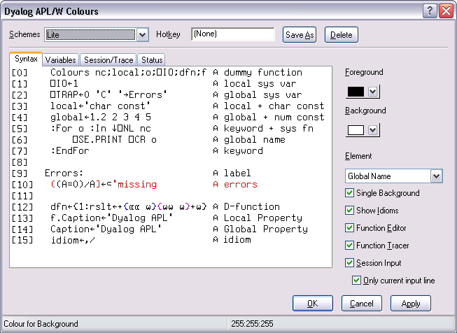

The Colour Selection dialog box allows you to select colours for:
The colour selection dialog box is selected by the [ChooseColor] system action which by default is attached to the Options/Colours menu item on the Session menubar and to the Colours menu item in the Session pop-up menu.
Syntax colouring allows you to visually identify various components in the function edit and session windows by assigning different colours to them, such as:
You may define a number of different syntax colouring schemes which are suitable for different purposes and a selection of schemes is provided. Choose the scheme you wish to use from the Combo box provided. If you change a colour allocation, you may overwrite an existing Colour Scheme or define a new one by clicking Save As and then entering the name of the Scheme. You may delete a Colour Scheme using the Delete button.
To allocate a colour to a syntax element, you must first select the syntax element. You may select a syntax element from the Combo box provided, or by clicking on an example in the sample function provided. Having selected a syntax element, choose a colour using the Foreground or Background selectors as appropriate.
The Show Idioms checkbox allows you to choose whether or not idioms are to be identified by syntax colouring.
The Single Background checkbox allows you to choose whether to impose a single background colour, or to allow the use of different background colours for different syntax elements.
Check this box if you want to enable syntax colouring in Edit windows.
Check this box if you want to enable syntax colouring in Trace windows.
Check this box if you want to enable syntax colouring in the Session window. Note that the colour scheme used for the Session may differ from the colour scheme selected for Edit windows and is specified by the Session Colour Scheme box on the Session/Trace tab.
This option only applies if Session syntax colouring is enabled. Check this box if you want syntax colouring to apply only to the current input line. Clear this box, if you want to apply syntax colouring to all the input lines in the current Session window. Note that syntax colouring of input lines is not remembered in the Session log, so input lines from previous sessions do not have syntax colouring.
You may associate a different hot key with any or all of your colour schemes.
When you depress a hot key over a function in an Edit window, the function is displayed using the scheme associated with the hot key. Releasing the hot key causes it to be displayed in the normal scheme.
This feature is intended to allow you to quickly check for certain syntax elements. For example, you may define a special scheme that only highlights global names and associate a hot key with it. Pressing the hot key will temporarily highlight the globals for you.
To associate a hot key with a colour scheme, click on the Hotkey field, and then make the desired keystroke. To disassociate a hot key, use <backspace>.